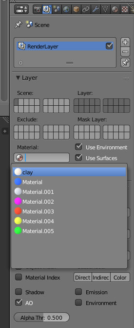
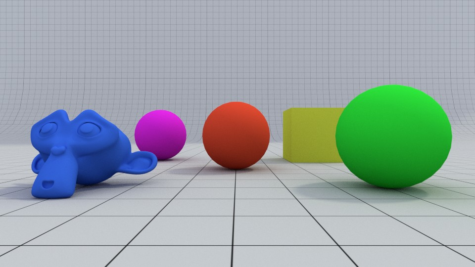
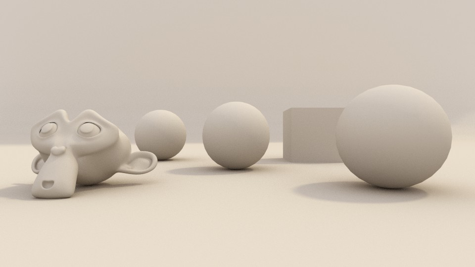

Clay render (renderização de argila/barro) é uma técnica de uso comum para apresentar modelos 3D que ainda não estão terminados ou sem texturas/materiais. É uma forma também eficaz de apresentar apenas a topologia e forma de um modelo 3D sem a distração das texturas e materiais. Neste renders, os objetos surgem todos apenas com um material, geralmente um um cinza quente opaco (similar a argila/barro), e a imagem resulta monocromática.
A forma mais simples de criar um clay render é utilizar a opção Material override (substituição de materiais) disponível no Blender Internal Render e no Cycles.
  